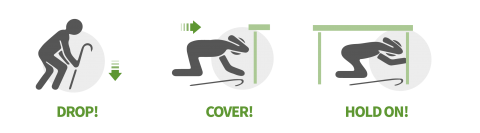

The Big One Information
What is “The Big One?”
A major earthquake that could potentially impact the Philippines with disastrous effects has been referred to as "The Big One" one of the most anticipated seismic disasters in the region.
FAULT LINE INFORMATION

- The West Valley Fault is one of the main fault systems that plays a part in The Big One scenario. This fault passes across six cities in the Greater Metro Manila region over a distance of about 100 kilometers. This includes Makati City and Taguig City.
- The West Valley Fault cuts through a part of the eastern part of Makati City occupied by barangays (villages) Comembo, East Rembo, Pembo, and Rizal.
- Research indicates that residential buildings—many of which disregard building codes—will suffer the worst damage in the event of an earthquake with a magnitude of 7.2. So if you happen to live within the defined areas listed below, take extra precaution to ensure safety in case the so-called Big One will ever happen.
What to do now and when “The Big One” occurs?
The government of the Philippines and other groups have been working to raise public knowledge regarding earthquake readiness. Public education campaigns, simulation, and drills are among the measures being taken to make sure locals are prepared for a significant earthquake.
BEFORE
-
Prepare an emergency go-bag at all times. Having an emergency preparedness kit on hand may help you keep your family safe during a disaster.
The go-bag includes; food, water, medicine, first aid kits, clothes, important documents, toiletries, extra money, flashlight, battery-powered radio, and other essentials.
-
Make a plan.
Familiarize yourself with the evacuation plan and routes
If you live close to the shoreline, learn the evacuation routes in case of a tsunami.
-
Protect Your Home.
Secure up heavy things such as refrigerators, water heaters, televisions, bookcases, and attach to the wall items. Store heavy and fragile items on lower shelves.
If you have structural problems that could lead to the collapsing of your home during an earthquake, you should think about making improvements to your building.
DURING
DROP! Get on your hands and knees wherever you are, and grab onto something sturdy.
COVER! Wrap your arms around your head and neck. Crawl beneath any adjacent strong tables or desks for cover.
HOLD! Hold on with one hand if you are beneath a desk or table, and be prepared to move with it if it move
Using a wheelchair?

Using a cane?

Using a walker?
Reminder
- If you are in a car, pull over and stop. Set your parking brake.
- If you are in bed, turn face down and cover your head and neck with a pillow.
- If you are outdoors, stay outdoors away from buildings.
- If you are inside, stay and do not run outside and avoid doorways.
AFTER
- After an earthquake, you must prepare for more aftershocks. In the case of an aftershock, be ready for a Drop, Cover, and Hold On.
- Go outside and leave the building as soon as possible if you are inside a damaged structure. Avoid going inside damaged buildings.
- Text someone or rap on a wall or pipe if you're stuck. Use a whistle rather than yelling, and shield your mouth with your shirt.
- When the shaking stops, move quickly inland or to higher ground if you are in a tsunami-prone area. Steer clear of flooding as they may contain garbage, sewage, and chemicals.
- whether you are trained, check yourself to determine whether you are harmed and assist others.
- Once you are safe, pay attention to local news reports for emergency information and instructions via battery-operated radio, TV, social media or from cell phone text alerts.